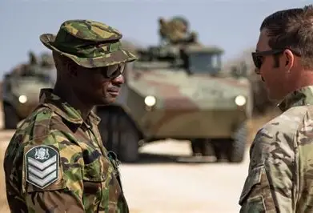
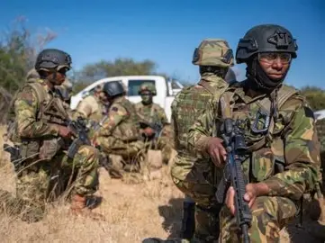

BDF Operations
Strength • Discipline • National Protection — every mission executed with precision and honour.
Core Operations
National Defence
Protecting sovereignty and borders through continuous readiness, deterrence, and direct military action when necessary to safeguard Botswana's territorial integrity.
Training & Readiness
Building discipline, endurance and operational readiness through rigorous training programmes at BDF's military training facilities across the country.
Peacekeeping Missions
Supporting global stability through participation in UN and African Union peacekeeping operations, contributing to peace in conflict-affected regions.
Disaster Relief
Rapid deployment during floods, droughts, and national emergencies to support civil authorities and protect citizens from natural and man-made disasters.
Border Patrol
Round-the-clock monitoring and protection of Botswana's extensive borders against illegal cross-border activities, smuggling, and unauthorised entry.
Civil Support
Partnering with police, health authorities, and local governments to support civil administration during emergencies and major public events.
Support Operations
Specialised units operating in coordination to deliver comprehensive national security coverage.
Ground Operations
Land-based tactical units providing frontline defence and internal security across Botswana's territories.

Air Support
Aerial surveillance, transport logistics, and close air support to ground units during critical operations.
Special Operations
High-value target operations, covert missions, and crisis response requiring specialist skills and training.

Engineering Support
Field engineering, route clearance, construction of temporary military infrastructure, and technical support.
Key Milestones
Botswana Defence Force Established
The BDF was formed to protect Botswana's independence, sovereignty, and territorial integrity following independence.
First International Peacekeeping Deployment
BDF soldiers began participating in regional peacekeeping and stability missions across southern Africa.
Air Wing Expansion
The BDF Air Wing expanded its fleet and capabilities, enhancing aerial surveillance and emergency response.
UN Peacekeeping Contributions
BDF began contributing troops to United Nations peacekeeping missions globally, strengthening international ties.
Modernisation Programme
Ongoing investment in modern equipment, cyber defence, and specialised training to meet contemporary security challenges.